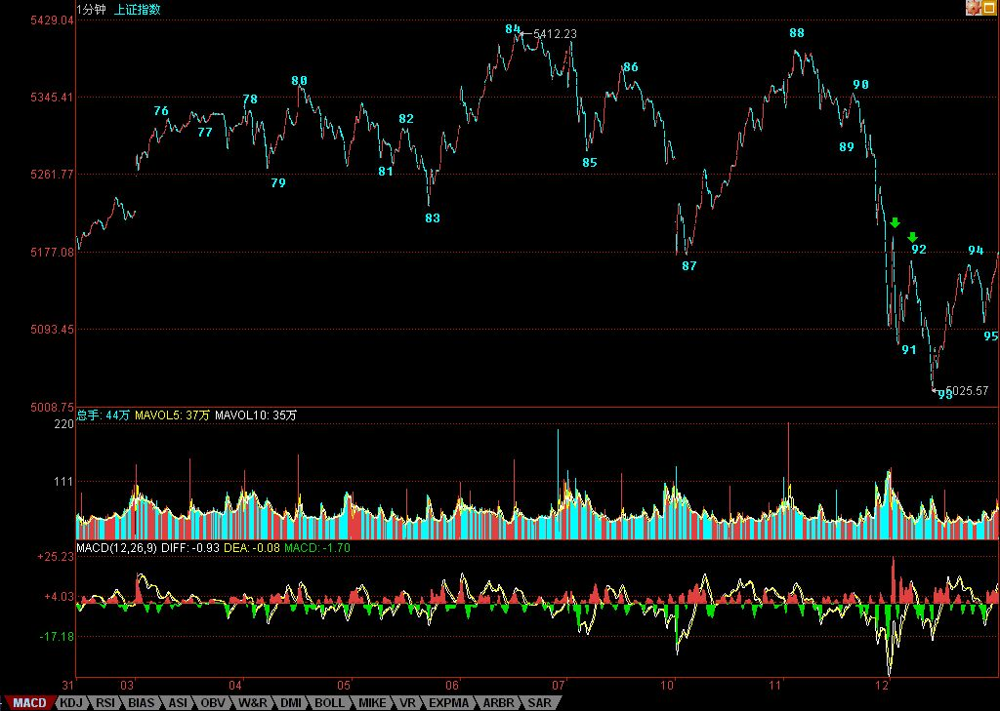

今天的走势太技术，简单说，就是昨天说的，跌破5周线后必然有反弹，问题的关键是这个反弹能延续到什么位置，如果不能抽回5265点之上，那么后面的走势依然充满凶险。
但如果了解了本ID理论的一些最简单结论，那今天的走势，简直就是一个现场教科书演示。你可以清楚地看到，走势是如何从线段扩张成一个1分钟中枢的，而其中利用背驰等关系，又是如何能在火海刀山中逍遥游的。
显示，第一个绿箭头的那一笔，没有发生笔破坏，那必然要回落去完成线段的走势，这是理论上100%保证的。
而92这一处，出现线段破坏，但该线段不能拉回85处，那么这就构成了85-88这1分钟中枢的第三类卖点，后面的继续下跌也是理论100%保证的。
93处，标准的线段类背驰，这就意味着92这1分钟第三类卖点，将出现中枢扩展，至少形成一个1分钟中枢，这也是理论100%保证的。
也就是说88-93的下跌已经完成，后面必然有一个针对这下跌的反弹。后面的演化，都如教科书般标准，学过本ID理论的，都知道这一切都可以当下判断，无须事后分析。
那么，现在后面的走势如何，很简单，84-93这个1分钟的走势类型离开76-85这个5分钟中枢后，就要看一个1分钟的走势类型的反抽能否出现回到79这一点，也就是5265点之上。不行，就构成这5分钟中枢的第三类卖点，后面至少要扩展成为30分钟中枢，最恶劣的，就是一个5分钟级别的下跌。
今天在93点按理论要求进去的，以及昨天没按理论要求走的，都要关注这第三类买卖点是否成立，如果不成立，那大盘就继续中枢震荡，那简直是本ID理论的天堂。
个股方面，其节奏不一定和大盘一样，用本ID股票为例子，600578、000099、000999这些，昨天并没有任何构成日顶分型的迹象，而今天很快也破坏了形成日顶分型的可能，这是短线的强势股，就一定要耐心等待日顶分型的出现。
而像000938这些，如果你用本ID的理论去操作，里面的短差机会对于散户来说简直好玩透了。请好好研究一下000938的图，看看昨天的顶分型多么标准，而今天17.59的底背驰又是多么经典，力度比较请看5分钟图。这两者的差价有多少？
别看不起短线，看不起短线的，不过是因为你没这水平。当然，没这水平，就别太短线了，短线可需要战士够钢铁。
本ID的理论可不单单是短线的，各种级别都适合，关键是你能真掌握了。
先下，再见。
